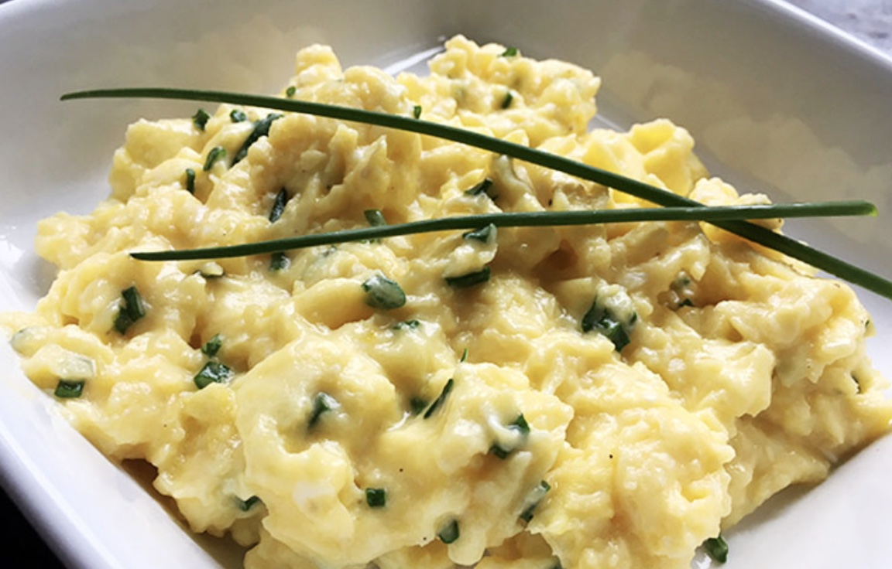

Signature Scrambled Eggs

Perfect for a healthy breakfast, midday snack, or a delicious sandwich filling, learn how to make Gordon Ramsay's famous scrambled eggs here!
Ingredients
- 6 cold eggs
- 15g butter
- Salt and pepper
- Crème fraîche
- Chives
Steps:
- Crack 6 cold eggs into a deep saucepan.
- Add the butter. For smaller batches, use a 2-to-1 eggs-to-butter ratio.
- Put the pan on high heat.
- Stir continuously with a rubber spatula—don't whisk—making sure to scrape the bottom of the pan.
- After 30 seconds, take the pan off the heat. Keep stirring. After about 10 seconds, put back on the heat. Repeat for 3 minutes.
- In the last minute, season the eggs lightly. For extra creamy texture, stir in 1 tsp of crème fraîche.
- Plate and garnish with chopped chives.
Return to top
Return to main page